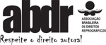

CIP-BRASIL. CATALOGAÇÃO NA PUBLICAÇÃO
SINDICATO NACIONAL DOS EDITORES DE LIVROS, RJ
W372m
3. ed.
Wazlawick, Raul Sidnei, 1967-
Metodologia de pesquisa para ciência da computação / Raul Sidnei Wazlawick. -
3. ed. - Rio de Janeiro : LTC, 2021.
: il. ; 23 cm.
Inclui bibliografia e índice
ISBN 978-85-951-5109-3
1. Computação. 2. Pesquisa - Metodologia. I. Título.
20-65393 CDD: 004
CDU: 004
Leandra Felix da Cruz Candido - Bibliotecária - CRB-7/6135
